5.3.1 BLE and CAN-FD Transparent UART
This section explains how to explore the PIC32-BZ6 curiosity board can seamlessly integrate Controller Area Network Flexible Data-Rate (CAN-FD) and Bluetooth Low Energy (BLE) technologies. This section shows how to set up a peripheral device that can efficiently communicate CAN-FD messages between a CAN bus and a smartphone using the Microchip Bluetooth Data (MBD) app.
This demo shows that CAN and CAN-FD messages received by PIC32WM-BZ6204UE can be forwarded to a central device (smartphone with MBD app) via BLE. In addition, this demo provides a simple mechanism of parsing received BLE messages sent from MBD and structuring this data as a CAN or CAN-FD message to transmit it back to the CAN bus.
Users can choose to either run the precompiled Application Example hex file provided on the PIC32-BZ6 Curiosity Board or follow the steps to develop the application from scratch.
It is recommended to follow the examples in sequence to understand the basic concepts before progressing to the advanced topics.
Recommended Reading
-
Getting Started with Application Building Blocks – See Building Block Examples from Related Links.
-
Getting Started with Peripheral Building Blocks – See Peripheral Devices from Related Links.
- See BLE Connection from Related Links.
- See BLE Transparent UART from Related Links.
- BLE Software Specification – See MPLAB® Harmony Wireless BLE in Reference Documentation from Related Links.
Hardware Requirement
| S. No. | Tool | Qty |
|---|---|---|
| 1 | PIC32-BZ6 Curiosity Board | 1 |
| 2 | 1 | |
| 3 | APGDT006 CAN Bus Analyzer FD Tool | 1 |
| 4 | DB9 Gender Changer female to female | 1 |
| 5 | USB 2.0 Cable A Male to C Male | 1 |
| 6 | USB 2.0 Cable A Male to Mini B Male | 1 |
| 7 | Null Modem Cable | 1 |
SDK Setup
Refer to Getting Started with Software Development from Related Links.
Software Requirement
-
To install Tera Term tool, refer to the Tera Term web page in Reference Documentation from Related Links.
- CAN Bus Analyzer FD Tool Driver and Wireshark Extcap:
- APGDT006-driver-Oct2023.zip
- APGDT006-wireshark-extcap-Mar2024.zip v4.2.6 64-bit
- Wireshark - v4.2.6 64-bit - See Wireshark in Reference Documentation from Related Links.
- CAN_fifo_buffer_test.py
- CAN-FD_standard_extended_id_test.py
- install_v1.zip
Smart phone App
- Microchip Bluetooth® Data (MBD)
Programming the Precompiled Hex File or Application Example
Using MPLAB® X IPE:
- Import and program the precompiled hex
file:
<Harmony Content Path>\wireless_apps_pic32_bz6\apps\ble\peripheral_applications\can_peripheral_trp_uart\precompiled_hex. - For detailed steps, refer to Programming a Device in MPLAB® IPE in Reference Documentation from Related Links.
Using MPLAB® X IDE:
- Perform the following the steps mentioned in Running a Precompiled Example. For more information, refer to Running a Precompiled Application Example from Related Links.
- Open and program the application
“
can_peripheral_trp_uart.X” located in “<Harmony Content Path>\wireless_apps_pic32_bz6”.\apps\ble\ peripheral _applications\can_peripheral_trp_uart\firmware - For more details on how to find the Harmony Content Path, refer to Installing the MCC Plugin from Related Links.
Demo Description
This demo presents three scenarios to demonstrate the flow of data:
- Scenario 1: PIC32WM-BZ6204UE can generate standard CAN, CAN-FD, and CAN-FD extended messages and transmit them to the CAN Bus Analyzer.
- Scenario 2: PIC32WM-BZ6204UE can receive CAN and CAN-FD extended messages from a CAN bus and forward these messages to a central device using a transparent service.
- Scenario 3: PIC32WM-BZ6204UE can receive and parse BLE packets, then structure the data to generate and send corresponding CAN or CAN-FD messages back to the CAN bus.
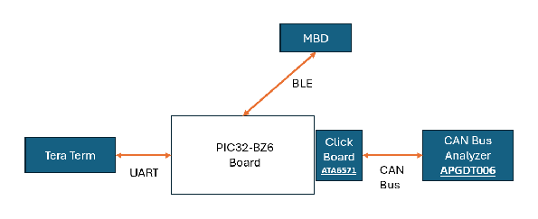
Take the above image to visualize how data is passed between MBD, PIC32WM-BZ6204UE, and the CAN Bus Analyzer. We demonstrate that data can flow in both directions: from the CAN Bus Analyzer to PIC32WM-BZ6204UE to MBD, and from MBD to PIC32WM-BZ6204UE to the CAN Bus Analyzer. TeraTerm serves as a user interface, presenting a menu of CAN/CAN-FD messages for PIC32WM-BZ6204UE to generate and send to the CAN Bus Analyzer. It also provides a trace log of transmitted and received messages, ensuring users can monitor the communication flow effectively.
We demonstrate this data flow using the following three scenarios:
Scenario 1:
- Users will be presented with three options in TeraTerm to generate CAN, CAN-FD, or CAN-FD extended messages. PIC32WM-BZ6204UE will structure the CAN/CAN-FD frame and transmit it to the CAN Bus Analyzer.
- To verify the generated and transmitted messages, users can use Wireshark to view the packets created by PIC32WM-BZ6204UE.
Scenario 2:
- Users can input 1-64 bytes of data on the MBD app.
- PIC32WM-BZ6204UE will receive this data through the transparent service, parse it, and structure it into a CAN message (1-8 bytes of user data) or a CAN-FD extended message (9-64 bytes of user data).
- The generated CAN or CAN-FD message will then be transmitted to the CAN Bus Analyzer.
Scenario 3:
- Users can utilize provided Python scripts to generate CAN or CAN-FD messages on the CAN Bus Analyzer.
-
PIC32WM-BZ6204UE will receive these messages and forward the data via BLE to a smartphone with the MBD app installed.
Once the demo application is programmed, PIC32WM-BZ6204UE will begin advertising. A central device, such as a smartphone, can scan for these advertisements and connect by searching for the name “pic32cx-bz6” on the Microchip Bluetooth Data (MBD) app.
Upon reset, the demo will print a message to the terminal indicating the name of the demo and will print “Advertising.” The terminal will also print a menu of options to generate CAN/CAN-FD messages. When a device connects, the terminal will show “Connected.” If the device disconnects, a “Disconnected” message will appear, and PIC32WM-BZ6204UE will resume advertising, prompting another “Advertising” message. Throughout the demo, the terminal will print the status of the sent or received messages to provide further insight.
- Speed: 115200
- Data: 8-bit
- Parity: none
- Stop bits: 1 bit
- Flow control: none
Testing Setup
- Hardware setup:

- Plug in the ATA6571 into the mikroBUS1 port on the PIC32-BZ6 Curiosity Board.
- Plug in the DB9 Female-Female Gender Changer into the CAN0 port on the CAN Bus Analyzer FD Tool.
- Either use a standard DB9 cable to connect the ATA6571 DB9 port to the DB9 Female-Female Gender Changer (as shown in the image) OR directly plug in the ATA6571 DB9 port into the DB9 Female-Female Gender Changer.
- After these connections are made, plug in the USB-C cable into the DBG USB port on the PIC32-BZ6 Curiosity Board. Then plug in the USB Mini B cable into the J4 on the CAN Bus Analyzer FD Tool.
- Wireshark setup:
- Install Wireshark.
-
Important: Make sure to install Wireshark v4.2.6 64-bit.
-
- Download the Wireshark extcap zip
from CAN Bus Analyzer FD Tool Driver and Wireshark
Extcap (
APGDT006-wireshark-extcap-Mar2024.zip). - Unzip files in
APGDT006-wireshark-extcap-Mar2024.zip and paste it in
C:\Program Files\Wireshark\extcap.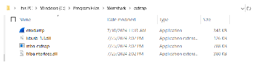
- Important: Wireshark is only able to receive/capture messages. Additionally, the python scripts (which transmits data) cannot be running while Wireshark is open/capturing data.
- For more information on installation, refer to CAN-Bus-Analyzer-FD-Users-Guide.pdf chapter 4.2. The pdf can be downloaded from CAN BUS ANALYZER FD TOOL.
- Install Wireshark.
- Adding Python support to APGDT006:
- Setup Python.
- Navigate to Python Releases for Windows | Python.org.
- Install Python.
-
Important: Make sure to install Python v3.9.0 64-bit.
-
- Install files:
- Unzip the install_v1.zip folder
located in “<Harmony Content Path>\wireless_apps_pic32_bz6
\apps\ble\peripheral_applications\can_peripheral_trp_uart\tools” folder to extract files. - Install File
“
mba-1.3.0” whl, to do this browse to the Python Install Folder. In the folder path type “cmd” . - Once In The Command Window
Type: python -m pip install C:\(FILE DIRECTORY)
\mba-1.3.0-py3-none-any.whl (If Done Correctly Your Screen Will Look Like
This).
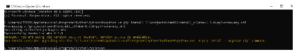
- To Double Check If the Install
Went Thorough Enter This in the Command Window: pip list.
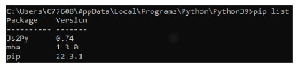
- Correct mba bug before
executing a python script with the APGDT006 tool. Browse to the mba folder
within the python install folder.
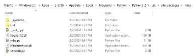
- Open
mba.py.Replace line 491:With this: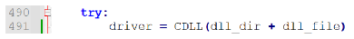
Note: If this step is NOT taken, a user would see the following error when attempting to execute a script.
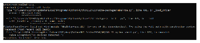
- Unzip the install_v1.zip folder
located in “<Harmony Content Path>\wireless_apps_pic32_bz6
- Install
cba.fdDriver:- Download the driver install zip
from CAN Bus Analyzer FD Tool Driver and Wireshark
Extcap (
APGDT006-driver-Oct2023.zip). - Unzip the folder.
- Connect the CBA-FD hardware to the laptop.
- Go to device manager and
install the driver. After it is installed, the device manager should look like
this.
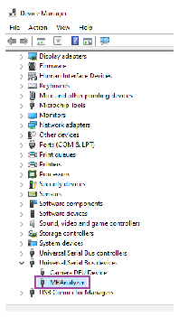
- Reboot PC.
- Download the driver install zip
from CAN Bus Analyzer FD Tool Driver and Wireshark
Extcap (
- Execute the python test:
- From within the python folder
run this script “
CAN-FD_pythonTest.py” with python. - After running the script your
command window must look like this.
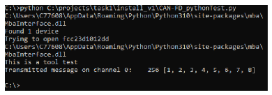
- You will now see 5 blue LED
lights on the board illuminated.
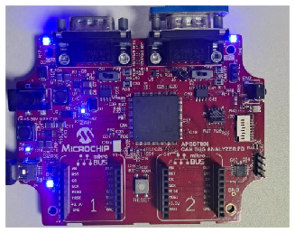
- This indicates the Python setup has been successfully completed.
- From within the python folder
run this script “
- Setup Python.
CAN-FD_pythonTest.py) which is only to be used during the initial
Python setup. The scripts used later in this demo should not be confused with this testing
script. Testing
This section assumes that user has completed the setup mentioned in the Testing Setup section.
- Scenario 1:
This scenario presents the data flow from PIC32WM-BZ6204UE to the CAN BUS Analyzer. Users interact with TeraTerm to generate CAN/CAN-FD frames on PIC32WM-BZ6204UE.Scenario 1 (i.e., PIC32WM-BZ6204UE -> CAN Bus Analyzer):
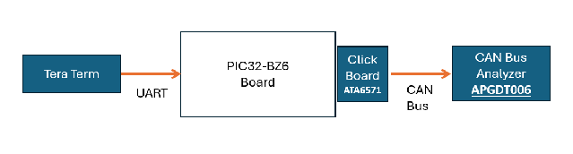
- Have all boards connected as in Hardware Setup above.
- Open a terminal emulator like Tera
Term and select the COM port@ (Speed: 115200, Data: 8-bit, Parity: none, stop bits: 1
bit, Flow control: none) .
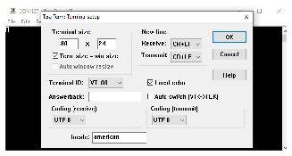
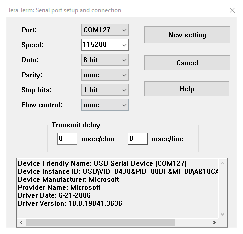
- Reset PIC32WM-BZ6204UE and you will see the following menu of actions that can be
performed:
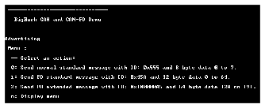
- Start capturing on Wireshark
- Open up Wireshark.
- Click on the icon next to the Microchip CAN BUS Analyzer interface.
- Configure the following:
- Tick the Send Acknowledgment box then press Save.
- Double click on the Microchip CAN
Bus Analyzer interface to start capturing data.
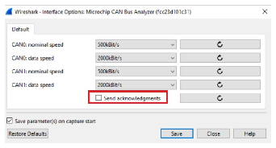
- In TeraTerm, press 0 then 1 then 2.
- If successful, TeraTerm and Wireshark
would look like this.
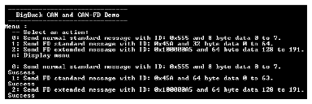
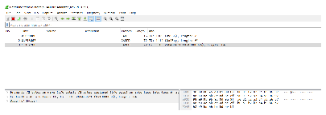
- Scenario 2:
This scenario shows the data flow from MBD to PIC32WM-BZ6204UE to the CAN Bus Analyzer.Scenario 2 (i.e., MBD on smartphone -> PIC32WM-BZ6204UE -> CAN Bus Analyzer):
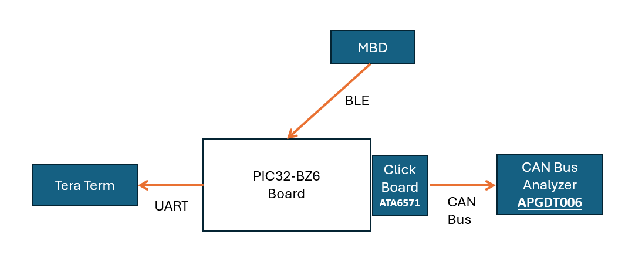
- Have all boards connected as in Hardware Setup above.
- Open a terminal emulator like Tera Term and select the COM port@ (Speed: 115200, Data: 8-bit, Parity: none, stop bits: 1 bit, Flow control: none) as in step 1.b.
- Open MBD on your smartphone. Navigate
to BLE UART then PIC32CXBZ and search for “pic32cx-bz6.” Connect to the device and
select the transparent option. From here you can enable the “Display Data” checkbox to
begin viewing received data.
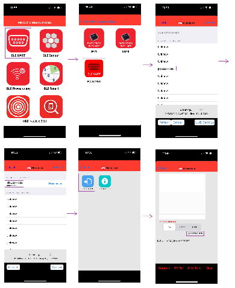
Note: Some iOS users may not find the device “pic32cx-bz6” in the “PIC32CXBZ” page in MBD. In this case, users can select “BM70” on MBD and follow the same instructions. - Follow step 1.d to setup Wireshark.
- Send between 1 and 8 bytes of data on
MBD (e.g. “123”).
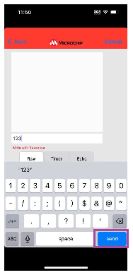
- If successful, TeraTerm and
Wireshark will look like this:
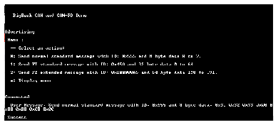
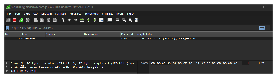
Note: When PIC32WM-BZ6204UE receives a message between 1 and 8 bytes, it will structure a standard CAN message with ID of 0x555 and will append 0x00 to any of the remaining 8 bytes.
- If successful, TeraTerm and
Wireshark will look like this:
- Send between 9 and 64 bytes of data
on MBD (e.g. “123456789”).
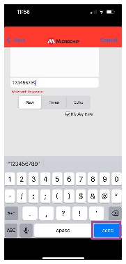
- If successful, TeraTerm and
Wireshark will look like this:
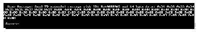
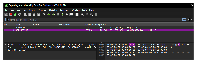
Note: When PIC32WM-BZ6204UE receives a message between 9 and 64 bytes, it will structure an extended CAN-FD message with ID of 0x100000A5 and will append 0x00 to any of the remaining 64 bytes. - If successful, TeraTerm and
Wireshark will look like this:
- Scenario 3:
This scenario shows the data flow from the CAN Bus Analyzer to PIC32WM-BZ6204UE to MBD.
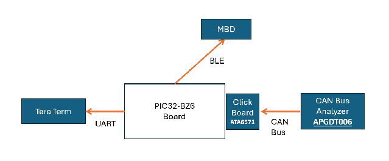
Scenario 3 (i.e., CAN Bus Analyzer -> PIC32WM-BZ6204UE -> MBD on smartphone):
- Follow steps 2.a through 2.c to establish a BLE connection.
- Do not capture data on Wireshark for the remaining steps.
-
Run CAN_fifo_buffer_test.py located in “<Harmony Content Path>\wireless_apps_pic32_bz6
\apps\ble\peripheral_applications\can_peripheral_trp_uart\tools” folderNote: Wireshark cannot be capturing data at the same time you use the python script to transmit data.-
If successful, command prompt and TeraTerm will look like this:
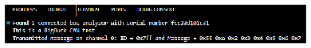
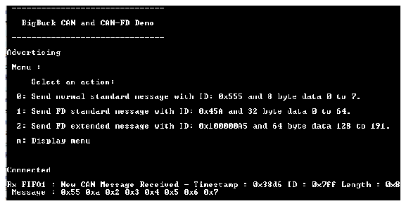
-
The message will also be seen on MBD as follows:
-
You can also play around with the message IDs in the script to test message capture in RX FIFO0, RX Buffer and RX FIFO1, respectively.
-
-
Run CAN-FD_standard_extended_id_test.py located in “
<Harmony Content Path>\wireless_apps_pic32_bz6\apps\ble\peripheral_applications\can_peripheral_trp_uart\tools” folder:-
If successful, command prompt and TeraTerm would look like this:
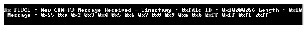
-
The message will also be seen on MBD as follows:
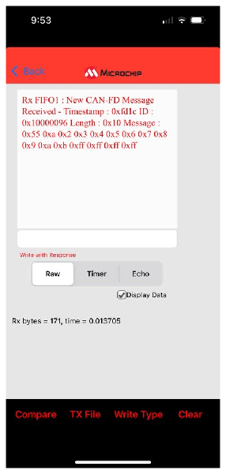
-
You can also play around with the message IDs in the script to test standard and extended ID filtering, respectively.
-
Developing the Application from Scratch using the MPLAB Code Configurator
-
Create a new harmony project. For more details, see Creating a New MCC Harmony Project from Related Links.
-
Import component configuration – This step helps users setup the basic components and configuration required to develop this application. The imported file is of format
.mc3and is located in the path “<Harmony Content Path>\wireless_apps_pic32_bz6\apps\ble\advanced_applications\can_peripheral_trp_uart\firmware\can_peripheral_trp_uart.X”. - Accept dependencies or satisfiers when prompted.
- Verify if the Project Graph window has all the expected configuration.
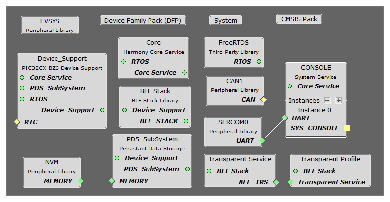
configUSE_TICKLESS_IDLE” is set to 0. The macro is available in
FreeRTOSConfig.h file#define configUSE_TICKLESS_IDLE 0Verifying Advertisement, Connection and Transparent UART Profile Configuration
-
Select the BLE Stack component in the Project Graph.
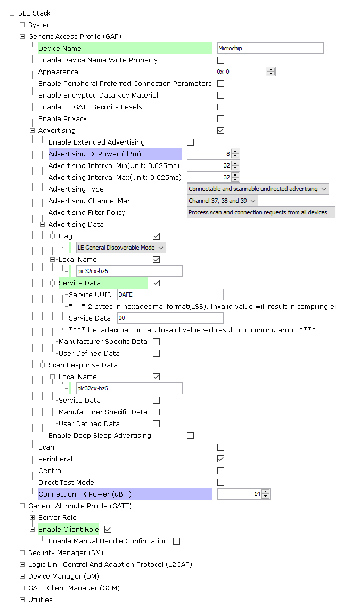
- Select Transparent Profile
component in the Project Graph.
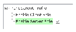
Verifying CAN1 Configuration
-
Select CAN1 component in the Project Graph.
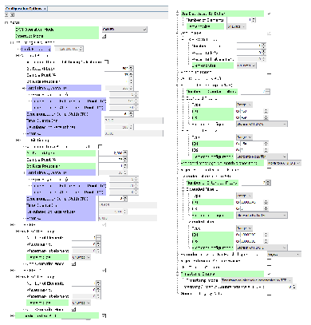
Verifying SERCOM Configuration
-
Select SERCOM0 component in the Project Graph.
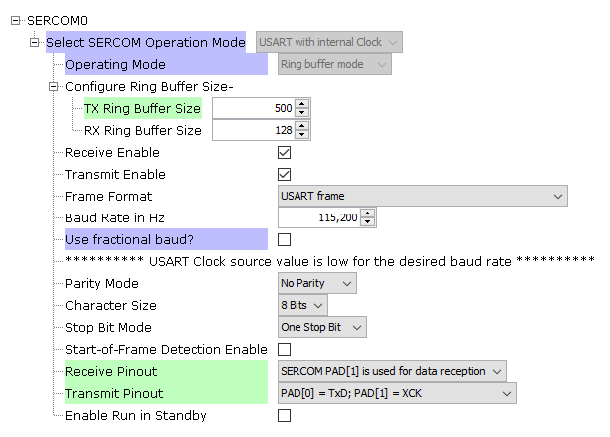
Verifying the Pin Configuration
-
Select Pin Configuration under Plugins in the Project Graph:
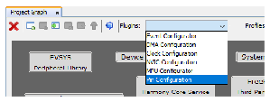
- Verify the Pin Settings:
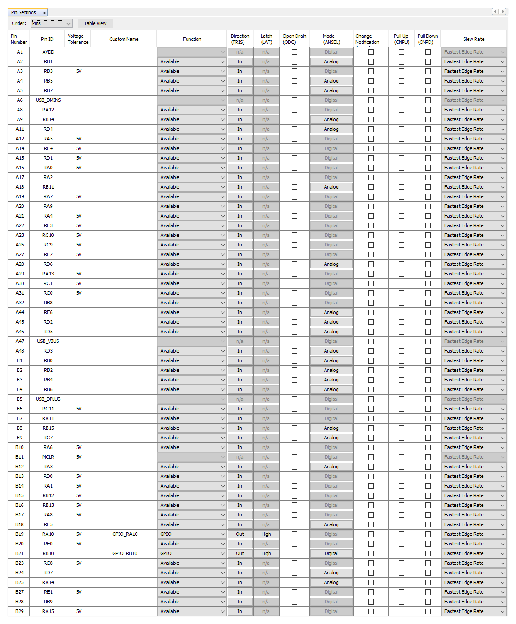
- RA10 and RB10 must have this
configuration for ATA6571 to operate in normal mode. See this Pinout Diagram of the ATA6571 and mikroBUS:
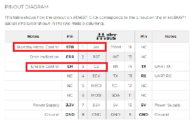
Pin RA10 corresponds to the CS pin on the mikroBUS which is the EN pin on ATA6571.
Pin RB10 corresponds to the AN pin on the mikroBUS which is the STB pin on ATA6571.
These are the operating modes of the ATA6571: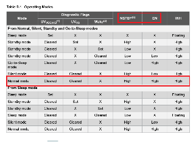
From this schematic, we can see that AN is connected to NSTBY and INH is NC. Hence, we must set RA10 and RB10 to be high so that the ATA6571 can operate in normal mode.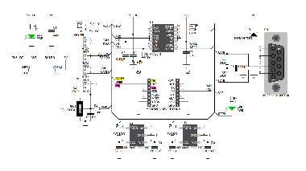
- RA10 and RB10 must have this
configuration for ATA6571 to operate in normal mode.
Generating Code
For more details on code generation, refer to MPLAB Code Configurator (MCC) Code Generation from Related Links.
Files and Routines Automatically generated by the MCC
After generating the program source from the MCC interface (by clicking Generate Code), the BLE configuration source can then be found in the following project directories.
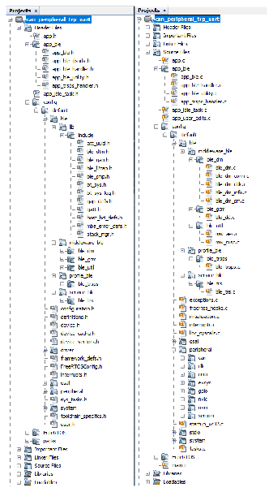
Initialization routines for OSAL, RF System, and BLE System are auto-generated by the MCC.
See OSAL Libraries Help in Reference Documentation from Related Links.
Initialization routine executed during program initialization can be found in the project
file.C.
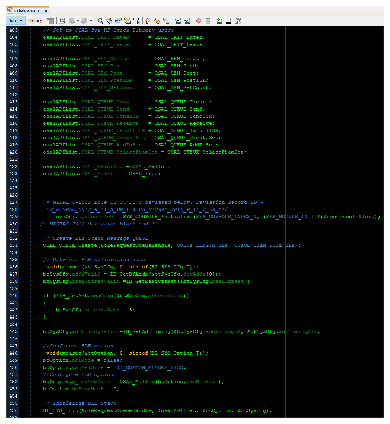
The BLE stack initialization routine executed during Application Initialization can be found in project files. This initialization routine is automatically generated by the MCC. This call initializes and configures the GAP, GATT, SMP, L2CAP and BLE middleware layers.
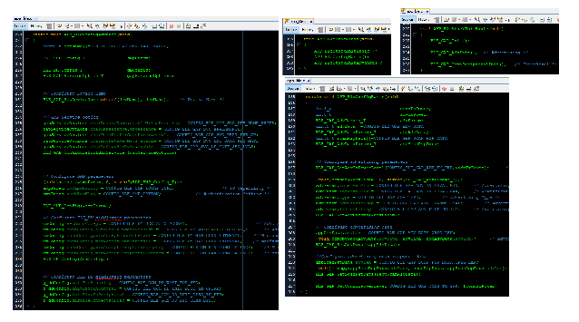
Autogenerated, Advertisement Data Format

| Source Files | Usage |
|---|---|
app.c | Application State machine, includes calls for Initialization of all BLE stack (GAP,GATT, SMP, L2CAP) related component configurations |
app_ble\app_ble.c | Source Code for the BLE stack related component configurations, code related to function calls from app.c |
app_ble\app_ble_handler.c | GAP, GATT, SMP and L2CAP Event handlers |
app_ble\app_trsps_handler.c | All transparent UART server related event handlers |
ble_trsps.c | All transparent server functions for user application |
app.c is autogenerated and has a state machine
based Application code sample, users can use this template to develop their
application.Header Files
ble_gap.h: This header file contains BLE GAP functions and is automatically included in the app.c fileble_trsps.h: This header file associated with API’s and structures related to BLE Transparent Client functions for Application User
Function Calls
MCC generates and adds the code to initialize the BLE Stack GAP, GATT, L2CAP and SMP in
APP_BleStackInit() function
APP_BleStackInit()API is called in the Applications Initial StateAPP_STATE_INITinapp.cis the API that will be called inside the Applications Initial StateAPP_STATE_INITinapp.c
User Application Development
ble_trsps/ble_trsps.hinapp.c, BLE Transparent UART Server related API's are available herestdio.hinapp.candapp_trsps_handler.cperipheral/sercom/usart/plib_sercom0_usart.hinapp_ble_handler.candapp_trsps_handler.cosal/osal_freertos_extend.hinapp_trsps_handler.capp.hinapp_trsps_handler.c- Include the user action. For more information, refer to User Action from Related Links.
definitions.hmust be included in all the files, where UART will be used to print debug information.Note:definitions.his not specific to UART but instead must be included in all the application source files where any peripheral functionality will be exercised.
Configure CAN1 and USART and Start Advertisement
CAN1
CAN1_MessageRAMConfigSet(Can1MessageRAM);
CAN1_RxFifoCallbackRegister(CAN_RX_FIFO_0, APP_CAN_RxFifo0Callback, APP_STATE_CAN_RECEIVE);
CAN1_RxFifoCallbackRegister(CAN_RX_FIFO_1, APP_CAN_RxFifo1Callback, APP_STATE_CAN_RECEIVE);
CAN1_RxBuffersCallbackRegister(APP_CAN_RxBufferCallback, APP_STATE_CAN_RECEIVE);
USART
SERCOM0_USART_ReadNotificationEnable(true, true);
SERCOM0_USART_ReadThresholdSet(1);
SERCOM0_USART_ReadCallbackRegister(uart_cb, (uintptr_t)NULL);
Start Advertising
BLE_GAP_SetAdvEnable(0x01, 0); 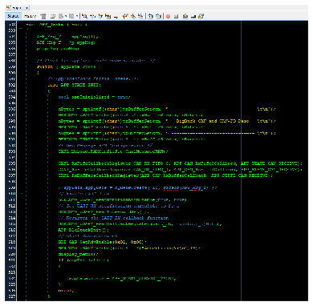
Connected and Disconnected Events
-
In
app_ble_handler.c "BLE_GAP_EVT_CONNECTED"event will be generated when a BLE connection is completed
Connection Handler
-
Connection handle associated with the peer peripheral device needs to be saved for data exchange after a BLE connection
-
p_event->eventField.evtConnect.connHandlehas this information -
Start advertising upon disconnection
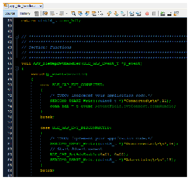
- Many of the CAN functions are located
in the
app.cfile. These functions include: - CAN callback functions, responsible for
error checking and maintaining the CAN state machine:
- void APP_CAN_TxFifoCallback(uintptr_t context)
- void APP_CAN_RxBufferCallback(uint8_t bufferNumber, uintptr_t context)
- void APP_CAN_RxFifo0Callback(uint8_t numberOfMessage, uintptr_t context)
- void APP_CAN_RxFifo1Callback(uint8_t numberOfMessage, uintptr_t context)
- CAN helpers:
- uint8_t CANLengthToDlcGet(uint8_t length)
- static uint8_t CANDlcToLengthGet(uint8_t dlc)
- Display menu to terminal:
- static void display_menu(void)
- Print and transmit the received CAN
message to MBD:
- void print_and_tx_message(uint8_t numberOfMessage, CAN_RX_BUFFER *rxBuf, uint8_t rxBufLen, uint8_t rxFifoBuf)
- General function used to send a
CAN/CAN-FD message:
- void sendCANMessage(uint32_t id, bool extended, uint8_t datalen, uint8_t* databuf)
- Print the status of the Tx or Rx event
to the terminal:
- void print_status(APP_CAN_STATES temp_state)
- Refer to “<Harmony Content Path>\wireless_apps_pic32_bz6
\apps\ble\advanced_applications\can_peripheral_trp_uart\firmware\src\app.cto see their full implementation.
Transmit CAN/CAN-FD Message to CAN Bus Analyzer FD Tool
- Add “
APP_MSG_UART_CB” to the generatedAPP_MsgId_T.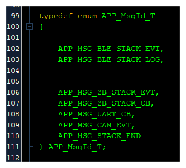
- The UART data will be captured in the
uart_cb()function.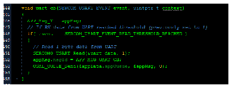
- The function responsible for transmitting
CAN/CAN-FD messages is
sendCANMessage().- The functions
APP_UARTCBHandlerandAPP_TrspsEvtHandler()are responsible for gathering the data to be transmitted and they call sendCANMessage to structure and send the CAN message.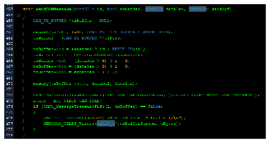
- The functions
- When data is inputted into TeraTerm, the
data is captured by UART. From there the data ends up in the
APP_UartCBHandler(). This function creates a data buffer for either a standard CAN message, CAN-FD message, or CAN-FD extended message and calls sendCANMessage depending on the 3 options that the user chose.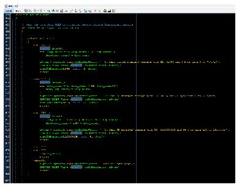
- When the user inputs custom CAN data into
MBD, the message is received by the transparent service. The
BLE_TRSPS_EVT_RECEIVE_DATAevent is generated upon receiving a BLE packet. This function structures a data buffer for either a standard CAN message or a CAN-FD extended message depending on the length of data inputted by the user. This CAN message is filled with user defined data in contrast to the 3 options of predefined data used in the UART callback.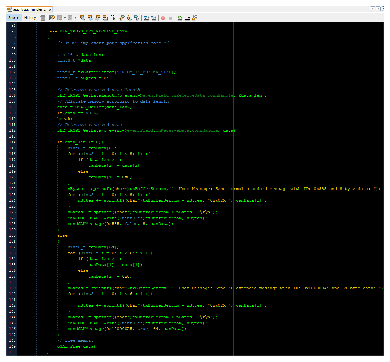
Receive CAN/CAN-FD Messages and Send to MBD
- The CAN Rx callback functions call the
print_and_tx_message()function to print the received data to the terminal and transmit the message to MBD. - The
print_and_tx_message()is used to queue messages to be sent over the transparent service and print the CAN data to the terminal. - Add “
APP_MSG_CAN_EVT” and “APP_MSG_UART_CB” to the generatedAPP_MsgId_T. BLE_TRSPS_SendData(); is the API to be used for sending data towards the central device.
print_and_tx_message() function to initiate the data transmission upon
receiving a CAN message.Where to go from here
- BLE Sensor App utilizes the Transparent UART building block, see BLE Sensor from Related Links.